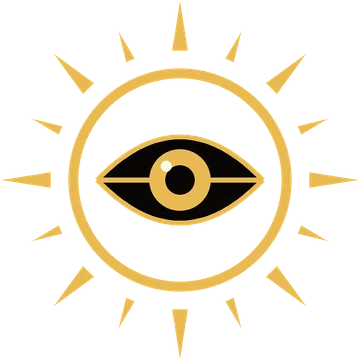
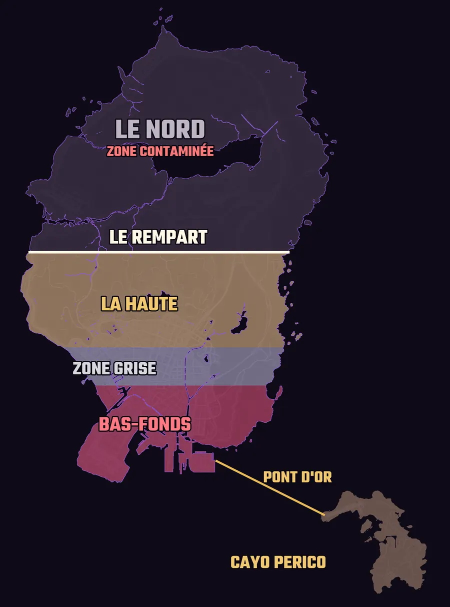
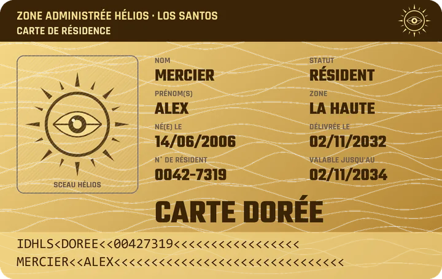
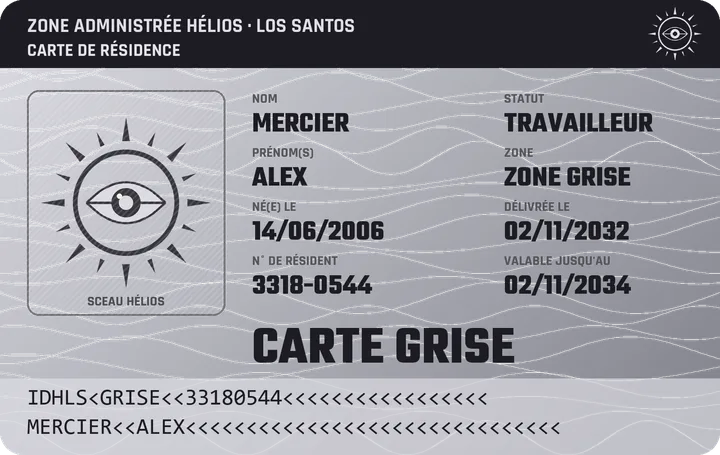
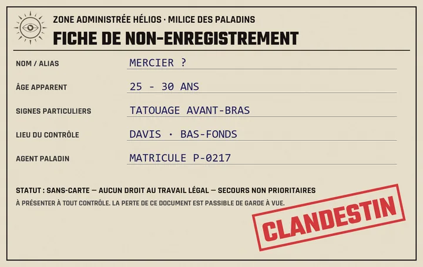
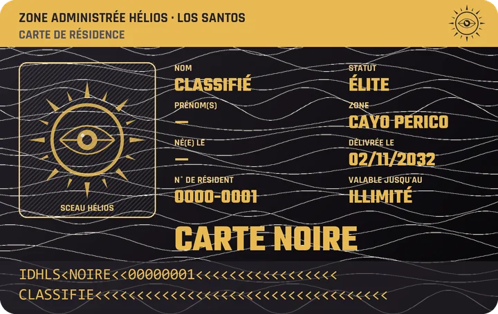
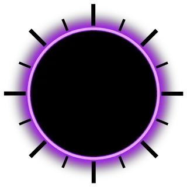

Zone Administrée Hélios · Dossier d'arrivée
Le Rempart
Au Sud du mur, tout s'achète. Même ta liberté.
Bienvenue à Los Santos. La ville appartient à une corporation, un mur coupe l'État en deux et ton avenir dépend d'une carte. Voici tout ce qu'il faut savoir avant de poser le pied dans le Sud.
Pas le temps ? Lis juste ça.
- Los Santos a été rachetée par une corporation, le Groupe Hélios. Gouvernement, justice, police et grands médias lui obéissent.
- Un mur, le Rempart, coupe l'État en deux. Le Nord serait contaminé. Personne n'en revient. Tout se joue au Sud.
- Le Sud est divisé entre la Haute (les riches), la Zone Grise (les travailleurs) et les Bas-Fonds (ceux qu'on a oubliés).
- À ton arrivée, tu choisis ta Carte : Dorée, Grise ou Sans-Carte. Elle décide de ton argent, de tes droits, de tes soins et de la façon dont on te traite.
- Rien n'est interdit, tout a des conséquences. Un riche peut tremper dans l'illégal, mais les Paladins, la milice d'Hélios, peuvent lui retirer sa Carte.
Chapitre 01
La chute
En cinq ans, San Andreas est passé d'un État en faillite à une ville sous tutelle privée.
- 2027Le Grand Défaut
San Andreas ne peut plus payer ses dettes. L'État fait faillite.
- 2028La ville s'embrase
Hôpitaux fermés, services publics à l'abandon. Émeutes et état d'urgence.
- 2029Le Rachat
Le Groupe Hélios rachète la dette de Los Santos. En échange, l'Accord de Tutelle lui confie la ville pour 99 ans.
- 2030L'Incident
Un accident frappe les laboratoires Humane Labs, au Nord. En onze mois, Hélios construit le Rempart.
- 2031L'annexion de Cayo Perico
Hélios prend l'île aux cartels et la relie au Sud par le Pont d'Or.
- 2032Aujourd'hui
Les nouveaux arrivants débarquent au Sud. C'est toi.
Chapitre 02
Le Groupe Hélios
Sécurité, immobilier, énergie. Hélios ne dirige pas une entreprise dans la ville : Hélios est la ville.
- Nom
- Groupe Hélios, du dieu grec du soleil, celui qui voit tout.
- Slogan
- « Hélios veille sur vous. »
- Dirigeant
- Inconnu. Hélios n'a pas de visage : chaque décision, chaque loi, chaque affiche est signée du seul nom de la corporation.
- Le Conseil
- Des actionnaires et des membres de l'élite. Personne ne sait combien ils sont, ni qui ils sont vraiment.
- Siège social
- Cayo Perico, l'île privée de la corporation, loin des rues qu'elle gouverne.
- Statut de la ville
- « Los Santos, Zone Administrée Hélios », jusqu'en 2128.

Ce qu'Hélios tient entre ses mains
Le gouvernement
Il existe toujours, mais le Gouverneur est nommé par le Conseil, qui garde un droit de veto. Les démarches passent toujours par lui.
La justice
Juges et avocats sont là. Les peines sont plus lourdes qu'avant, et elles dépendent de ta Carte.
Le LSPD
La police est payée par Hélios. Elle fait respecter la loi, mais ne touche pas aux Cartes.
Les secours
Les EMS soignent tout le monde, mais pas de la même façon : pour une Carte Dorée, ils arrivent plus vite et avec de meilleurs moyens.
Weazel News
La première chaîne de la ville diffuse la version officielle, toujours positive.
Le réseau IRIS
Des caméras dans toute la ville. Hélios voit tout, entend tout et n'oublie rien.
Chapitre 03
Le Rempart
Un mur de béton et d'acier traverse l'État d'ouest en est. Au-delà : le Nord. Officiellement, il n'existe plus.
Communiqué du Groupe Hélios
Ce qu'on vous dit
En 2030, une fuite toxique aux laboratoires Humane Labs a contaminé tout le Nord. Pour protéger la population, Hélios a érigé le Rempart en onze mois. Le passage est interdit. Le Nord n'existe plus.
Le Rempart nous protège.
Personne n'a jamais vu de malades. Les patrouilles de Paladins le long du mur sont bien trop nombreuses pour garder un désert. Et certaines nuits, il se passe des choses de l'autre côté. Ceux qui en parlent trop finissent par se taire.
Alors, qu'est-ce qu'Hélios cache au Nord ?
Chapitre 04
Le Sud : trois mondes
Aucun mur ne sépare les quartiers du Sud. Pas besoin : l'argent, la police et les affiches s'en chargent.

La Haute Cartes Dorées
Vinewood Hills · Rockford Hills · Richman · Del Perro · Downtown
Villas, voitures de luxe, rues impeccables. Les caméras sont partout et la police répond en deux minutes. Ici, on vit bien, tant qu'on reste du bon côté.
La Zone Grise Cartes Grises
Vespucci · Little Seoul · Mirror Park · Textile City
Ceux qui font tourner la ville : commerces, ateliers, bureaux. On travaille dur, on paie ses soins, et on rêve de monter un jour dans la Haute.
Les Bas-Fonds Sans-Carte
Davis · Strawberry · Rancho · Cypress Flats · La Mesa · le port
Débrouille, gangs, trafics. Les caméras y sont rares, les zones aveugles nombreuses, et la police n'y descend presque plus. Les affiches y sont arrachées ou taguées.
Chapitre 05
Cayo Perico & le Pont d'Or
Ancien narco-État conquis par les Paladins en 2031, Cayo Perico est devenu le paradis privé de l'élite. C'est là que siège Hélios, et que le Conseil prend ses décisions.
Passer le Pont d'Or
Un seul accès légal à l'île, gardé jour et nuit par un checkpoint des Paladins.
- Carte DoréePassage libre.
- Carte GriseAvec un laissez-passer de travail : on y vient pour servir les riches.
- Sans-CarteInterdit. Reste le bateau, la nage, le coffre d'un camion… ou un faux papier.
Sur l'île
Le siège d'Hélios, les villas de l'élite, la plage privée et le port franc, où transitent les marchandises de la corporation sans taxe ni contrôle.
Le cartel a été chassé jusqu'au dernier. Aujourd'hui, la jungle et les criques sont quadrillées par les Paladins. Il y a pourtant toujours quelqu'un pour tenter d'y faire passer quelque chose.
Chapitre 06
Les Paladins
Uniforme noir et blanc, casque intégral, soleil doré sur l'épaule. Lourdement armée et financée sans limite par Hélios, la milice privée de la corporation est plus redoutée que la police.

Les Paladins répondent directement au Conseil. Armes lourdes, véhicules blindés, équipement dernier cri : l'argent d'Hélios leur donne des moyens qu'aucune autre force de la ville ne peut égaler. Leur mission tient en quatre mots :
- Le RempartIls gardent le mur et le Pont d'Or. Personne ne passe.
- La corporationIls protègent Hélios, ses dirigeants et ses biens.
- Ton statutCe sont eux qui retirent une Carte ou changent un statut.
- Le réseau IRISIls ont accès aux caméras et retrouvent qui ils veulent.
Chapitre 07 · Le choix qui compte
Ta Carte
À ton arrivée, tu choisis ton statut. Il décide de ton point de départ, de tes droits et de la façon dont la ville te regarde. Clique sur une Carte pour voir ce qu'elle change.

Le résident
La Dorée possède : elle dirige les entreprises, vit dans la Haute et profite de la clémence du système. Elle a un empire… et tout à perdre.
| Départ | Capital confortable, appartement dans la Haute, voiture correcte |
|---|---|
| Travail | Patron : entreprises, immobilier, postes de direction |
| Secours EMS | Prioritaires : plus rapides, meilleurs moyens |
| Face au LSPD | Vouvoiement, pas de fouille sans motif |
| Face aux Paladins | Escorte et passage prioritaire |
| Justice | Clémence, amendes plutôt que prison |
| Cayo Perico | Accès libre |
| L'illégal | Possible. Mais au premier crime grave, les Paladins te retirent ta Carte : avoirs gelés, logement saisi. |

Le travailleur
La Grise exécute : elle a un emploi, des droits, et peut aller travailler à Cayo avec un droit de travail. Un pied dans chaque monde.
| Départ | Un peu d'argent, petit appartement en Zone Grise |
|---|---|
| Travail | Tous les jobs légaux : salarié, artisan, petit commerce |
| Secours EMS | Prise en charge standard |
| Face au LSPD | Contrôle classique |
| Face aux Paladins | Laissez-passer vérifié |
| Justice | Barème normal |
| Cayo Perico | Avec un droit de travail (laissez-passer) |
| L'illégal | Possible. Mais un crime grave te fait tomber Sans-Carte, et tu perds le droit de travailler légalement. |

Le clandestin
Pas de carte, juste une fiche de non-enregistrement. Rien à perdre, tout à prendre, et les portes de l'illégal grandes ouvertes.
| Départ | Presque rien, un squat dans les Bas-Fonds, un contact dans l'illégal |
|---|---|
| Travail | Aucun emploi déclaré, travail au noir seulement |
| Secours EMS | Pris en charge après tous les autres |
| Face au LSPD | Contrôle systématique, fouille fréquente |
| Face aux Paladins | Interpellation, garde à vue prolongée |
| Justice | Peines alourdies |
| Cayo Perico | Interdit |
| L'illégal | Ouvert dès le premier jour : réseaux, contacts, trafics |
Rien n'est interdit.
Tout a des conséquences.
Aucune Carte ne t'empêche de faire ce que tu veux. Elle change seulement ce que tu risques. C'est là que naît le RP : doubles vies, chantage, corruption, trahisons.
Monter, ou tomber
Ta Carte n'est pas gravée dans le marbre. Le dossier passe par le gouvernement, le statut est attribué par les Paladins.

Au-dessus de tout
La Carte Noire
Réservée à l'élite d'Hélios et aux Paladins. Nom classifié, validité illimitée, accès partout. On ne la choisit pas, on ne la demande pas : c'est Hélios qui la remet. Si tu croises quelqu'un qui en porte une, tu le sauras.
Chapitre 08
La vie sous Hélios
Hélios ne gouverne pas par la force brute. Il gouverne par le confort des uns, la peur des autres et la propagande pour tous.
Le réseau IRIS
Des caméras dans toute la ville. Hélios voit tout, entend tout et n'oublie rien. Dans les Bas-Fonds, le réseau est plus troué : les zones aveugles valent de l'or pour l'illégal.
Les médias
Weazel News appartient à Hélios. D'autres journaux et radios existent et enquêtent encore, à leurs risques : pressions, pubs retirées, visites des Paladins.
La Ligne Civique
Un numéro anonyme pour dénoncer ton voisin. Ça rapporte. Ici, tout le monde peut balancer tout le monde.
Le couvre-feu
Officiellement en vigueur dans les Bas-Fonds. En pratique, peu de patrouilles osent le faire respecter.
La justice
Même crime, peine différente : clémence pour les Dorées, barème normal pour les Grises, peine alourdie pour les Sans-Carte.
La propagande
Les affiches d'Hélios couvrent les murs de la ville. Dans la Haute, elles rassurent (« Hélios veille sur vous »). Dans les Bas-Fonds, elles menacent (« Dénoncer, c'est protéger »). Et pour garder tout le monde tranquille, Hélios offre du spectacle : loterie mensuelle, grandes fêtes comme le Jour du Rachat.
Sur les murs de la ville
Clique sur une affiche pour l'agrandir.
Chapitre 09
Les forces en présence
Qui tient quoi dans la ville, et de quel côté chacun penche.
Côté Hélios
Entre deux
Contre Hélios
Résistance
Chapitre 10 · Document non autorisé
Les Éclipsés
L'éclipse, c'est la lune qui cache le soleil. Dans l'ombre d'Hélios, un réseau de hackers refuse de plier. Ils piratent le réseau IRIS, détournent les écrans de la ville, font fuiter les dossiers de la corporation et diffusent sur Radio Éclipse ce que Weazel News ne dira jamais. Personne ne sait qui ils sont. Leur signature : un soleil noir cerclé de violet.
Le Nord est vivant.

Chapitre 11
Ce qui va arriver
Le lore avance en jeu, à travers des events ouverts à tous. Personne n'est obligé d'y participer, mais tout le monde en entendra parler.
Questions fréquentes
FAQ
Je dois connaître tout ça pour jouer ?
Non. Le lore est un décor, pas une obligation. Pas de background à écrire, pas d'examen. La seule chose qui te concerne directement, c'est la Carte que tu choisis à ton arrivée.
Quelle Carte choisir ?
Tu veux du business, du confort et du RP légal ambitieux : Dorée. Tu veux un RP de travailleur avec un pied dans chaque monde : Grise. Tu veux l'illégal dès le premier jour : Sans-Carte.
Un riche peut faire de l'illégal ?
Oui. Rien n'est interdit. Mais s'il est condamné pour un crime grave, les Paladins lui retirent sa Carte : il perd ses avoirs, son logement et ses privilèges.
Je peux changer de Carte ?
Oui, dans les deux sens. On monte par la naturalisation, la fortune ou la loterie. On tombe par une condamnation pour crime grave.
Qui peut me retirer ma Carte ?
Uniquement les Paladins. Le LSPD peut t'arrêter, mais il n'a aucun pouvoir sur ton statut.
Il y a un FIB ?
Non. Le renseignement et la surveillance de masse sont entre les mains d'Hélios, via les Paladins et le réseau IRIS.
Qu'y a-t-il vraiment au Nord ?
Personne ne le sait. Pas encore. À toi de le découvrir… à tes risques et périls.